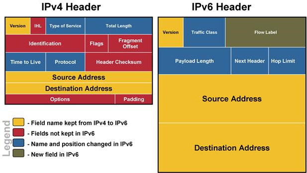
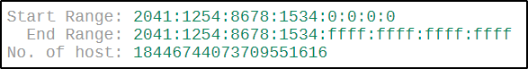
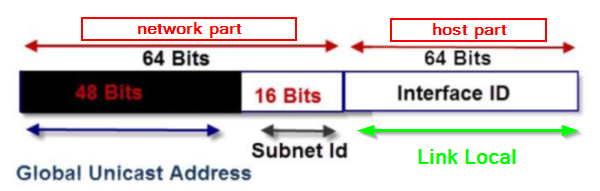

IPv6
Internet Protocol version 6 (IPv6) is the most recent version of the Internet
Protocol (IP) that is intended to replace IPv4
IPv4 → is a 32 bit address and so has 2
32 =
4.294.967.296 possible addresses
IPv6 → is a 128 bit address and so has 2
128 possible
addresses
Each hexadecimal number uses 4 bits, 4 of these 4bits numbers form a group(group= 4 numbers of
4 bits=16bit) and in a ipv6 address there are 8 groups separated by a colon(:).These 8 hexadecimal groups(16bit
x8=128bit) are case insensitive and zeros are not considered.
example:
1920:AC34:AABB:1230:87BC:8001:500C:416C

Forms of IPv6
•
Regular form: 1920:0:AA:0:8:800:500C:416C
•
Compressed form:
on ipv6 we can skip zeros so FF01:0:0:0:0:0:0:43 becomes FF01::43
•
IPv4 compatible:
0000:0000:0000:0000:0000:0000:874b:2b34 → ::
874b:2b34 →
::
135.
75.
43.
52 → 135.75.43.52
How to do shortened IPv6
example:2041:1254:8678:1534:0000:0000:0000:0000
→ 2041:1254:8678:1534::/64
A Mask Bits of 64 means that the first 64 bit of the ipv6 address are fixed
Website used where we can calculate IPv6 CIDR
to a range of addresses:
https://www.ultratools.com/tools/ipv6CIDRToRangeS
ome reserved IPv6 addresses
| designation |
IPv6 |
IPv4 |
explanation |
| loopback |
::1/128 |
127.0.0.1 |
usually used when a host talks to
itself over IPv6. This often happens when
one program sends data to another |
| IPv4-Mapped |
::FFFF:0:0/96 |
|
addresses used to embed
IPv4 addresses in an IPv6 address. One
use for this is in a dual stack transition
scenario where IPv4 addresses can be
mapped into an IPv6 address. |
| Unique Local Addresses (ULAs) |
FC00::/8FD00::/8 |
10.0.0.0/8
172.16.0.0/12
192.168.0.0/16 |
addresses reserved for local
use in home and enterprise environments
and are not public address space |
IPv6 structure
The
network part is used for routing
•
Global Unicast Address(48bit): used for the global network
addresses and are routable over the internet. They are the equivalent of the public addresses of IPv4
networks.
•
Subnet Id(16bit): identify
Unique Local addresses used for subnets on an internal networks and are
controlled by a network administrator. They are not routed on the internet
The
host part(64bit): identify
Link Local addresses that are addresses of interfaces, and
is derived from the actual physical or MAC address using IEEE’s Extended Unique Identifier (EUI-64) format. Link
Local are meant to be used inside an internal network, and like Unique Local Addresses are not routed on the
Internet.
IPv6 in URLs:
To use IPv6 in URLs we have to use square brankets →
http:[IPv6 address]/webpage
images bibliography:
https://sinhvientot.net/wp-content/uploads/2016/04/image004-20.jpg
http://www.steves-internet-guide.com/